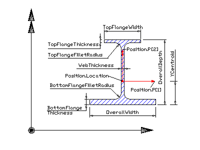

IfcAsymmetricIShapeProfileDef
Definition from IAI: The IfcAsymmetricIShapeProfileDef
defines a section profile that provides the defining parameters of an
asymmetric I-shaped section to be used by the swept surface geometry or the
swept area solid. Its parameters and orientation relative to the position
coordinate system are according to the following illustration. The centre of
the position coordinate system is in the profiles centre of gravity. The
profile is therefore centred on the y-axis, its location in y-direction is
given by the parameter CentreOfGravityInY. The bottom flange is always
wider than the top flange. Illustration: NOTE: The inherited attributes OverallWidth,
FlangeThickness and FilletRadius are used to define
BottomFlangeWidth, BottomFlangeThickness and
BottomFlangeFilletRadius.
HISTORY: New entity in Release
IFC2x Edition 2.
Figure: Parameters of
asymmetric I-shaped section definition
EXPRESS specification:
|
| TopFlangeWidth | : | Extent of the top flange, defined parallel to the x axis of the position coordinate system. |
| TopFlangeThickness | : | Flange thickness of the top flange of the I-shape. If given, the upper and the lower flanges can have different thicknesses. If not given, the value of the inherited FlangeThickness attribute applies to both, the top and bottom flange thickness. |
| TopFlangeFilletRadius | : | The fillet between the web and the top flange of the I-shape. If given, the fillet between upper and the lower flanges and the web can be different. If not given, the value of the inherited FilletRadius attribute applies to both, the top and bottom fillet. If the inherited FilletRadius is not given either, no filler is applied. |
| CentreOfGravityInY | : | Location of centre of gravity in y axis. The positive measure is applied according to the above illustration. |
|